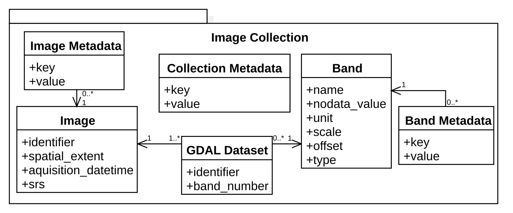

Image collections
In gdalcubes, an image collection is a set of \(n\) images, with data for \(m\) variables (or bands). Variables of the same image share a spatial footprint, recording date/time, and spatial reference system but may vary in spatial resolution. Different images may have different spatial footprints, recording date/times, and spatial reference systems.
GDAL datasets
Actual band data may come from any GDAL dataset, i.e., from anything that is readable by GDAL. This includes simple files, cloud storage, databases, and archive files through GDAL virtual file systems. Examples for readable datasets include:
1. A simple local GeoTIFF file
test.tif2. A GeoTIFF file in a .zip archive
/vsizip/archive.zip/xyz.tif3. A subdataset in a HDF4 file from MODIS
HDF4_EOS:EOS_GRID:"MOD13A2.A2013353.h00v08.006.2018226105756.hdf":MODIS_Grid_16DA4. A higher level GDAL Sentinel 2 dataset
SENTINEL2_L1C:S2A_OPER_MTD_SAFL1C_PDMC_20150818T101440_R022_V20150813T102406_20150813T102406.xml:10m:EPSG_326325. A file on a web server
/vsicurl/https://download.osgeo.org/geotiff/samples/spot/chicago/UTM2GTIF.TIF6. An object from cloud storage (Sentinel 2 on Amazon Web Services)
/vsis3/sentinel-s2-l1c/tiles/31/U/FT/2018/5/6/0/B08.jp2Image collection data model
gdalcubes implements the above definition of image collections in the following data model.

This model describes available images, available bands, and how specific GDAL datasets relate to images and bands of a collection. The data model simply points to actual data by GDAL dataset identifiers but does not store any image data. It is implemented as a relational SQLite database, i.e. can be stored as a single file, which typically consumes a few kilobytes per image. To allow for fast selection of images intersecting a given spatiotemporal area, the schema include indexes on the spatial extent and recording date/time.
Creating image collections
Depending on the complexity of the data product and the location of the image files, there are three different ways to create collection formats.
1. From local files using collection formats
gdalcubes comes with functions to create image collections from a set of GDAL dataset identifiers. Unfortunately, it is not straightforward to extract all needed information (e.g. recording date/time) automatically from GDAL datasets. Earth observation data products are organized in extremely different ways, from single files per image to complex directory structures like the Sentinel 2 SAFE format. To let gdalcubes know, how to create image collections from a set of GDAL dataset identifiers, we can define so called image collection formats for particular data products. Formats for some Sentinel, Landsat, and MODIS products are already shipped with gdalcubes. The collection format definition is described in detail in the next chapter.
In the following code example, an image collection is created from a list of files and the corresponding collection format L8_L1TP.
L8_files <- list.files(system.file("L8NY18", package = "gdalcubes"),
".TIF", recursive = TRUE, full.names = TRUE)
x = create_image_collection(L8_files, format = "L8_L1TP")2. From local files without collection formats
Image collections can be created without a dedicated image collection format if one of the following two conditions is true:
- Each provided image file / GDAL dataset identifier contains all bands of the collection, or
- Each provided image file contains a single band only
Users can then create an image collection from a simple list of GDAL datasets / files, the date/time of all images, and the name of bands.
In the following code example, an image collection is created from a list of files and their date/time and bands.
L8_files <- list.files(system.file("L8NY18", package = "gdalcubes"),
".TIF", recursive = TRUE, full.names = TRUE)
d = as.Date(substr(basename(L8_files), 18, 25), "%Y%m%d")
fname = basename(tools::file_path_sans_ext(L8_files))
b = substr(fname, 27, nchar(fname)) # extract band names
y = create_image_collection(L8_files, date_time = d, band_names = b)3. From cloud storage using STAC-API
The SpatioTemporal Asset Catalog (STAC) is becoming a widely accepted standard to describe spatiotemporal datasets, including image collections from available datasets on cloud storage. STAC-API presents a web service to search for available items / images by space, time, and additional properties (e.g. cloud cover) in collections. The response of STAC-API requests can be converted to gdalcubes image collections without opening any of the returned files using stac_image_collection(). The function supports filtering assets / bands by name, filtering images by additional metadata such as cloud cover, and customizing how URLs are converted to GDAL dataset identifiers using the url_fun argument.
The code example below first requests images intersecting with an area and time of interest from the open Sentinel-2 Cloud-Optimized GeoTIFF collection on AWS using the (rstac package)[https://cran.r-project.org/package=rstac] (Simoes et al. 2021) and afterwards creates gdalcubes image collection objects from the response.
library(rstac)
s = stac("https://earth-search.aws.element84.com/v0")
items = s |>
stac_search(collections = "sentinel-s2-l2a-cogs",
bbox = c(-74.25,40.49,-73.70,40.91),
datetime = "2021-06-01/2021-06-30") |>
post_request() |> items_fetch()
stac_image_collection(items$features)
stac_image_collection(items$features, asset_names = c("B02","B03","B04"))
stac_image_collection(items$features, property_filter = function(x) {
x[["eo:cloud_cover"]] < 10
})The STAC responses may look differently for different datasets and different cloud platforms. In some cases, url_fun must be adapted and additional GDAL configuration options for authentication must be set using gdalcubes_set_gdal_config(). In case a particular cloud dataset cannot be accessed, feel free to file an issue on GitHub.